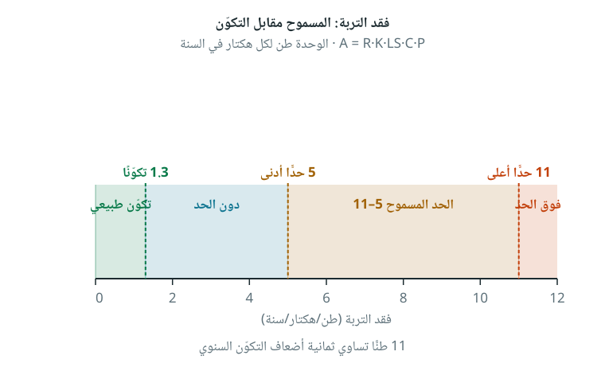

التعرية وفقد التربة
Erosion
فصل حبيبات التربة ونقلها بعامل متحرك ثم ترسيبها؛ ويقاس الفقد بالطن لكل هكتار في السنة ويقارن بمعدل تكوّن التربة الذي لا يتجاوز أجزاء من المليمتر.
التعرية فصل جزيئات التربة أو الصخر من موضعها ونقلها بعامل متحرك ثم ترسيبها في موضع آخر. العوامل ثلاثة: الماء والريح والجاذبية، وتُضاف إليها الأنشطة التي تفكك سطح الأرض وتتركه عاريًا. الفصل يحتاج طاقة: قطرة المطر والجريان السطحي والريح هي التي تنتزع الجزيء، والنقل يتم بالانجراف أو التعليق أو القفز.
في الأراضي الجافة يسود فعل الريح حين يخلو السطح من غطاء نباتي، وفي الأراضي الرطبة يسود الماء. معدل التعرية يقاس بالطن لكل هكتار في السنة، ويقارن بمعدل تكوّن التربة للحكم على استدامة الاستخدام الزراعي في موضع معيّن.
الآلية
كيف يحدث الأمر على مستوى الجسيمات أو المتغيّرات المباشرة
السلسلة أربع حلقات: انتزاع، ثم نقل، ثم تركيز في مسارات، ثم ترسيب. الانتزاع يبدأ بضربات قطر المطر التي تقصف السطح وتعزل حبيبات الطين وتقلل خشونة التربة. النقل يجري بجريان سطحي غير منظّم يملأ مسام السطح ويحمل الحبيبات. التمركز يبدأ في مسارات صغيرة تُزال بالحراثة، ويتحول إلى أخاديد حين يتجاوز عزم القص مقاومة التربة. في الريح يعمل الاحتكاك الهوائي على السطح، ثم يحمل القفز (saltation) معظم الحبيبات بضربات متتابعة تُفتّت الكتل، ثم يُنقل الغبار الناعم تعليقًا لمسافات بعيدة.
الأرقام والوحدات
العلاقات والوحدات والنطاقات العددية التي تسند الشرح
المعادلة العامة A = R·K·LS·C·P: A الفقد بالطن/هكتار/سنة، R عامل الأمطار، K قابلية التربة، LS الطول والانحدار، C الغطاء، P التدابير. الحد التربوي المسموح 5–11 طن/هكتار/سنة لتربة عمقها نحو متر، وفوقه يتجاوز الفقد ما يتجدد. معدل التكوّن الطبيعي 0.1 مليمتر سنويًّا، وكثافة ظاهرية 1.3 غ/سم³ تعطي 1.3 طن/هكتار/سنة فقط. أي أن حدًّا مسموحًا من 11 طنًّا يستهلك ما يعادل ثمانية أضعاف معدل التكوّن، ويستنزف سنتيمترًا في نحو عشر سنوات.
الفرق الدقيق
المفهوم الملتبس الذي يُخلَط به، وأين ينفصلان
الخلط الأول: التعرية ليست التجوية؛ التجوية تفكيك في المكان، والتعرية نقل بعد التفكيك. الثاني: التعرية ليست الترسيب، فالترسيب نهايتها لا تعريفها. الثالث: التصحر ليس تعرية؛ هو تدهور شامل في الإنتاجية قد يحدث بتعرية أو بتملّح أو بفقدان الغطاء. الرابع: الانجراف المساري ليس أخدودًا؛ الأول يزول بالحراثة والثاني لا يزول إلا بأعمال هندسية. ولا يُساوى فقد التربة بانخفاض الغلة، فالأخير متأخر ويُخفيه التسميد لسنوات.
حدود التعريف
أين ينكسر التعريف أو النموذج وما الذي لا يفسّره
معادلة الفقد العامة معايرة على حقول وبيانات أمريكية، وتعطي فقدًا عند نقطة لا إرسالًا إلى المجرى؛ الفرق بينهما قد يبلغ معظم الرسابة لأن جزءًا يُحتجز على المنحدر. المعادلة لا تمثّل الأخاديد ولا انهيارات المنحدر ولا تعرية ضفاف الأنهار، وقد تبالغ في المنحدرات الشديدة. عامل قابلية التربة يعتمد على النسيج والمادة العضوية ويُقاس في تجربة مفردة، فيتغير بالحراثة. وكثافة 1.3 غ/سم³ متوسط لا يمثل التربة الخشنة في الأراضي الجافة.

| الكمية | القيمة | المصدر |
|---|---|---|
| الحد الأدنى لفقد التربة المسموح | 5 طن/هكتار/سنة | [1] |
| الحد الأعلى لفقد التربة المسموح | 11 طن/هكتار/سنة | [1] |
| معدل تكوّن التربة بكثافة 1.3 غ/سم³ | 1.3 طن/هكتار/سنة | [2] |
| سماكة التربة المتكوّنة سنويًّا | 0.1 مليمتر | [2] |
المصادر
- 1 Erosion and Sedimentation — U.S. Geological Survey — Water Resources. www.usgs.gov/mission-areas/water-resources/science/science-topics/erosion-and-sedimentation · اطُّلع عليه 2026-11-16
- 2 Status of the World's Soil Resources — Main Report — FAO. www.fao.org/3/i5199e/i5199e.pdf · اطُّلع عليه 2026-11-16
استشهد بهذا المصطلح
الصيغتان مبنيتان من بيانات الصفحة نفسها: العنوان والتاريخ ورابط النسخة المنشورة.
التعرية وفقد التربة — Erosion. (2026). ديوان المعرفة — انفراد. https://infiradev.com/diwan/terms/erosion.html
@misc{erosion2026,
title = {التعرية وفقد التربة},
titleaddon = {Erosion},
howpublished = {{ديوان المعرفة — انفراد} — مرجع علمي عربي},
year = {2026},
url = {https://infiradev.com/diwan/terms/erosion.html},
urldate = {2026-11-16},
note = {مراجعة علمية: مراجعة آلية — ديوان المعرفة (روابط المصادر + عقد المحتوى + وجود الرسم) 2026-11-16}
}
راجعه: مراجعة آلية — ديوان المعرفة (روابط المصادر + عقد المحتوى + وجود الرسم) 2026-11-16 · 2026-11-16 · آخر تحديث 2026-11-16